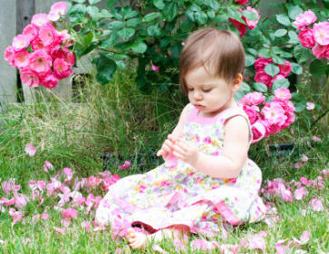
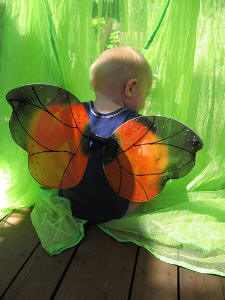

He's just discovered how exciting "outside" can be. Help him explore it safely.
These baby safety tips will help you brave the elements and emerge with your infant from the protective winter cocoon of your
home.
It's time to introduce your baby to the wonders of the world with the least worries possible.
Barbecues, cicada chirps, the rhythm of neighborhood lawnmowers...all carry fond childhood memories
of lazy summer days.
Since the backyard seems to be
merely an extension of the living room during those warm summer months, it makes sense to have it as
childproof as "outdoors" can be.
There are four separate areas you should concentrate on when it comes to outdoor childproofing. These baby safety tips will tackle each one - quickly and easily.
Baby Safety Tips to Keep Your Infant Cool
Your number one enemy in fun outdoor play is the sun. Besides damaging sensitive skin cells, the hot sun can quickly drain energy and cause dehydration.
You must be diligent to make sure your baby doesn't overheat.
Perspiration is your body's way of regulating heat. Unfortunately, this cooling system is underdeveloped
in an infant. He can get overheated much faster than you can. This is why you should never leave
your baby in a hot room or parked car for even just a few minutes.
One of the simplest things you can do to help keep him cool in the scorching summer is to choose
in light colored clothing. Shades of light green, blue, pink, or yellow do not attract as much of the sun's heat.
Dehydration is a huge concern when it comes to your baby's health.
Because a baby's sweat glands have not yet fully developed, you shouldn't rely on the absence of sweat to warn you
of dehydration. Instead, watch for a flushed face, warm skin, rapid breathing, and restlessness.
Infants under 6 months should not drink water, so be sure to provide extra breastmilk or formula in effort
to keep her hydrated. If your baby is over 6 months, give her a few ounces of water to drink from a sippy cup or bottle as well as increasing the day's formula or breastmilk consumption.
If you are using an infant carrier outdoors, be particularly aware of potential overheating. Your baby's
body heat and the closeness of the fabric can warm her up quickly.
For this reason, always choose a baby carrier that is made with lightweight nylon fabric instead of denim or other heavy material. (Celebrity moms like Angelina Jolie have figured this out.)
A fever of 105 degrees F or above (40 degrees C) is serious and could be the beginning of heatstroke. Call 911, give him
acetaminophen (Tylenol), remove his clothes, and sponge-bathe him with lukewarm water until the paramedics
arrive.
Outdoor Baby Safety Tips for Around the Grill
When I moved to Wisconsin, one of the things I had to learn was the art of grilling. Next to the
Packers (which is a whole other topic), grilled burgers and brats (an evolved hot dog) on Sunday is a tradition
of almost religious importance. It is not uncommon to look over the fence and see neighbor after
neighbor hunched over delicious-smelling grills.
Like the kitchen oven, the grill should always be a no-touch zone. Both electric and gas grills
take a long time to cool down. Maintain a 3-foot child-free radius at all times around the grill by using
a sturdy safety gate to prevent accidental burns.
Keep lighter fluid, matches, charcoal, propane, electrical starters, and cooking utensils out of reach at all times.
Baby Safety Tips to Prevent a Drowning Tragedy
The most common cause of death for children under one is drowning. You should never, ever, turn your
back on a child near water. Not even for a second. If you must turn away, take him with you.
Hazardous Buckets
Did you know that one of the top three locations of infant drownings are in buckets? (The others are tubs
and toilets.) It takes only 1 inch of water in a 5 gallon bucket for an accidental drowning.
Keep buckets turned upside down when not in use.
When you are using the buckets, have have two adults outside (one to wash, one to watch), or
keep one adult inside with the baby. If you don't have another adult nearby, use the buckets when your
infant is taking a nap or contained safely
in an activity center.
Side Note: Our activity center has lasted through my three children, and countless other borrowers. I consider it one of the most important
baby products you can buy. The ability to contain your mover in a portable toy is priceless.
Every year they seem to get better and better - making ours look almost boring in comparision. Fortunately, I can purchase new toys for the top, and toss the old ones. Look at all the
"distractibles" in this Pretty-in-Pink version,
or satisfy the craving to jump with a Jumperoo Activity Set.
Baby Safety Tips for Pools and Hot Tubs
Don't rely on inflatable devices (inner tubes,
water wings, etc.) to provide the parental protection only your sharp eyes can provide. There is simply no substitute for a watchful parent.However, you only have two eyes. So be smart and install some barriers around your pool. If your toddler moves out of your line of sight for a second (and that easily can happen),
those barriers may provide the vital seconds you need to reach her in time. Fortunately, there are many options when it comes to pool fences and alarms. These three rules will ensure you pick a great pool fence.
Besides fences and alarms, there are other poolside baby safety tips to keep in mind...
Never store tricycles or other tempting toys close to the pool. (Common sense, but still needs to be mentioned.)
Get your whole family signed up at your local Red Cross Center for CPR and basic first aid.
Have a phone list of emergency numbers and a cheat sheet for CPR and First Aid laminated and posted by the pool.
Hot tubs should be covered with self-latching locks when not in use. (They should have been provided when the
tub was purchased. If they weren't, contact the manufacturer.)
Children under 5 shouldn't be allowed in the hot tub, since it elevates their body temperature. Children over 5 should only stay for 5 minute increments.
Swimming with your baby is a wonderful way to play together. Her excitement to be in the pool is infectious. And,
of course, the swimsuit or trunks are adorable! See this year's cutest infant swimwear.

Basic Baby Safety Tips for the Yard
Keep your baby away from the garage as much as possible. Do not mow or weed-whack your lawn unless
he is supervised or sleeping in the house.
Installing a fence and locked gate will prevent her from wandering outside the yard
and weirdos from coming in. Use
a gate alarm system to notify you if the gate is opened (from the inside or outside). A wireless alarm
is especially helpful.
There are a whole host of mushrooms and plants that are poisonous outdoors.
Since 95% of everything babies touch end up in their mouth, keep a visual tally on all backyard exploring expeditions.
Side Note: Surprisingly, there are many common houseplants that are also poisonous to young
children (and pets). Check these poisonous houseplants to make sure your home is safe.
Insect-Fighting Baby Safety Tips
I am a walking popsicle for mosquitoes. They eat me alive.
Unfortunately, I have passed this sweet blood on to my children. It seems like a lose-lose situation.
Without insect repellant, all three of my girls look like they're suffering from the chicken pox. On the other hand, I have to consider whether those chemicals could do more harm than good.
Isabella's constant slobber and hand-eating guarantees that some of those chemicals will end up in her tummy. So what's a mom to do?
Baby Safety Tips for Using Bug Repellants

{Photo by Katrinket}
One solution I've found to save your baby from those nasty, red, insanely-itchy welts is to use an
Insect Repellent Band.
The band
can be attached to a stroller or other item (not baby's wrist to be chewed on!) and it will protect a 15 foot area.
This product has been highly rated and recommended by moms around the world.
If you choose to use traditional bug spray, remember that DEET is a chemical and should not be used lightly. In fact, it should never be used on infants under 2
months old. Here are some other baby safety tips for using an insect repellant around your baby.
If you choose to purchase a liquid insect repellant, make sure it's less than 10% DEET.
Apply the DEET product to your baby's clothes once a day rather than directly to his skin.
This will eliminate the possibility of ingestion (babies put their hands in their mouths approximately 64
times an hour).
If you do choose to apply directly to the skin, spray it on your hands first, and then
rub it on, avoiding his hands, eyes, and mouth. Immediately wash your hands with soap after application.
It should never be applied to cuts, wounds, rashes, or sunburns.
When you come inside, wash everyone's skin with warm sudsy water and change clothing.
How to Elminate Mosquitoes Naturally
Get rid of the bugs around your home the natural way by installing a bat house
somewhere on your property. It's like a bird house, only for bats. Bats will feast on the bugs in your yard at night and keep your mosquito
population to a minimum.
Other suggestions to naturally discourage mosquitoes are to...
Eliminate standing water (where mosquitoes breed).
Avoid dressing your child in bright colors or floral designs or using scented soaps or lotions - they attract bees and other insects.
Treating Bug Bites
If your infant does sustain some mosquito bites, dab them with a paste of baking soda and water.
Cortisone cream, used sparingly, can also soothe the itching. Only place the cream in areas under clothing where there's
no chance of your baby getting it into his mouth. Use the baking soda mixture on spots likely to be touched and slobbered on.
Your baby will learn all kinds of things about grass, water, caterpillars and butterflies this summer.
Help him avoid the lessons of sunburns, insect bites, and pool accidents by
applying these baby safety tips to your outdoor forays. In doing so, you will be ensuring that he will have
many happy summers to come.
How to Win the Hat War With Your Baby
You've got a great infant sun hat. How do you get her to wear it? See my secrets to win the hat war with your baby.
Sneaky, Sneaky, Sunscreen...
There are some Sultans out there in the world of baby sunscreens: non-oily, long-lasting, gentle formulas... and then there
are the absolute shams. Here's how to tell the difference.
3 Steps to the Top 10 Baby Sun Hats
I'm amazed that the crap that passes as a "sun hat" these days. Don't waste your money. There are three simple
things that launch these 10 hats into the Smart Buy Category.
4 Easy Sun-Blocking Solutions for Healthy Baby Skin
The American Skin Cancer Foundation says that just one burn can double a baby's chances
of getting skin cancer later on in life. Learn how to easily prevent baby skin sun damage.
I just subscribed to the site, and I'm very happy I did. I have worked in the medical field for several years and love to have good resources for when things come up... ~ Crystal S.
What a great site and thanks for having it available! ~ Bernadette W.
I'm very excited to start receiving the newsletter. I've checked out your site a couple times and I loooovve how it's arranged, your language, and tips - it's great! ~ Emily N.
Heather, I can't express how happy I am I discovered your site! ~ Liza T.
Thank you Heather, for your wonderful newsletter. There is always something new! ~ Desiree T.
I'm a 1st time young mom, 23 and single, so I have found very very helpful...I can't seem to stop myself telling everyone I know about you, some thought you were my mom! ~ Vuyiswa N.
Your website is very helpful and I discovered a couple of great online stores. 'Cause I'm not a big reader, it is very nice that I can find the most important information through your
website. ~ Tonya G.
Thanks Heather! Your Milestone eBook is SO detailed and so correct. My son is doing all or most of the things and many are not mentioned in the usual books/sites. Great job and keep it up! ~ Anwesha C.
Thanks so much for creating such an AWESOME website. I really appreciate your sense of humor and real writing style. ~ Andrea Z.
My baby refused all bottles until you showed me the MAM bottle. Thank you so much for the recommendation. I wouldn't have known about them if not for your website. ~ Jennifer at Sweet Lilly ConfectionsThank you ladies! Talk about great motivation to keep writing...


 I just subscribed to the site, and I'm very happy I did. I have worked in the medical field for several years and love to have good resources for when things come up...
I just subscribed to the site, and I'm very happy I did. I have worked in the medical field for several years and love to have good resources for when things come up...